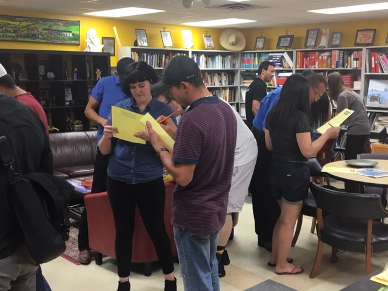
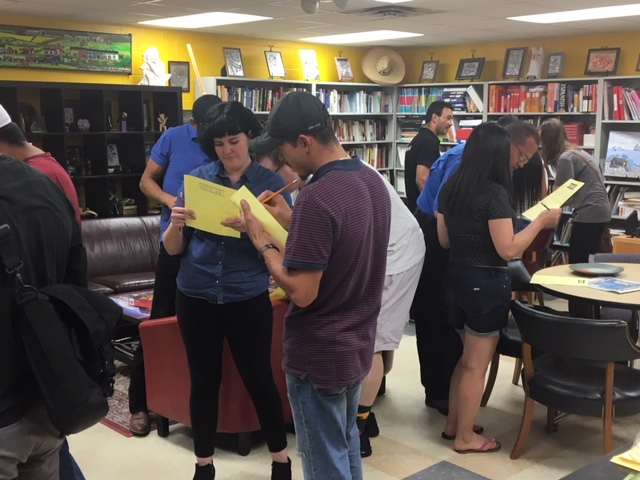

Work
Applied Research
Needs Assessment
 
Initial research
The Backside Learning Center is a nonprofit that serves the immigrant workers of Churchill Downs by providing English classes,
citizenship classes, bureaucratic support, after-school tutoring, art classes, and community. At first, I was brought in to shed light on what factors
could be contributing to low English class attendance among a particular demographic. After developing interview questions,
I worked with a translator to have in-depth, informal conversations with participants.
The research revealed that because the BLC offered only one class, folks with varying levels of English were all in one group, which discouraged individuals with lower levels of English from participating and attending.
Those with higher skill were confident, gregarious, and more likely to speak up in class, while those with lower levels did not feel comfortable participating out of embarassment, and because those at higher levels dominated
the class. These insights led to the introduction of more classes for different levels of ability.
Improvements to the After-school program
While I was doing my initial research, I had visited the after-school education program, where the adult English class was held concurrently. Volunteers were assigned to different age groups to help them with homework and lead exercises. I noticed that these volunteers were often lost, lacked confidence and direction, and usually "copped out" to playing board games instead of sticking to educational activities. While not having much experience with education before this outside of teaching graduate students, I learned as much as I could about best practices in after-school program activities, and developed binders with detailed lesson plans and activies for volunteers to use as a guide.
Market Research

Wild Dog Rose is a tea boutique in Louisville. They asked that I perform market research to inform their marketing strategy prior to
their opening. I connected quantitative data with my own primary qualitative research done through survey, interviews, and participant observation to reveal
prominent tea-drinker profiles and needs.
One of the central themes I found was that tea-drinkers wanted to know specific wellness applications for different
tea varieties. When they opened, they launched a very well-attended wellness workshop series, and maintained a tea educational blog. They were voted Best New Business by the LEO Weekly
in 2017!
Web Development

I am a current student of Code Louisville, an innovative work training program in Louisville, Kentucky that coaches students on software development. I have finished their Front-end Web Development certification and am currently in the React framework course. I hope to combine my research skills with my technical training through Code Louisville to break into the world of UX research and design.